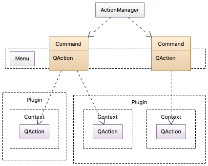

The Action Manager and Commands
Qt Creator provides a central options page for managing shortcuts for actions in Edit > Preferences > Environment > Keyboard. Plugins must tell Qt Creator about the actions they provide, so they can appear in the options. Also some actions, like Edit > Undo, need to be dispatched to different plugins depending on the context which the user is currently in, for example a text editor, or a UI design component. The Core::ActionManager and Core::Command classes are used to manage this.
The action manager contains a list of Core::Command instances. Each command represents an entry in the keyboard shortcut settings.
A command also manages which actual QAction is currently represented by the command, depending on context. For this, a command has its own QAction which is accessible via Core::Command::action(), and should be used when adding the command to the UI like the menu and tool buttons. This QAction delegates its triggered() and toggled() signals to the currently active QAction.

Command
The class Core::Command represents an action with a shortcut that can be set by the user in the settings, and can be delegated to an actual QAction in a plugin, depending on context.
A command is referred to by its unique ID. Plugins use the ID when registering an action for the command in a specified context with Core::ActionManager::registerAction(). That method returns a Core::Command instance that is then used to further configure the action. If multiple QActions are registered for the same command (the same ID), they must be registered for different contexts. The ID is also used for grouping in the options page: everything up to the first dot in the ID is used as the category, under which to show the command.
By default, the options page shows the text of the currently active QAction in addition to the ID. If that does not fit the purpose well, you can set a different display text with Core::Command::setDescription().
Use the command's Core::Command::setDefaultKeySequence() method to set the default key sequence that is used if the user doesn't customize it. The shortcut on the QAction that you register with Core::ActionManager::registerAction() is never used, so do not set that.
Core::Command::action() returns the action that should be used for UI and user interaction. Add this to menus and tool buttons. You should never set properties like the enabled or visibility state on this QAction directly. It is managed by the action manager and reflects the state of the currently active QAction in some plugin.
The QAction that you registered in the action manager is for your internal purposes. Use that to connect your logic to the QAction::triggered() signal, and to set the enabled and visibility state. Core::Command::action() will reflect these changes, if your QAction is active, determined by the active context. For performance reasons the action text, tool tip and icon are not updated by default. They are only copied from the first QAction registered for the command. Set the corresponding Core::Command::CommandAttribute if you need dynamic updates of these properties.
Contexts
When plugins register a QAction for a command, they need to provide a Core::Context. Which of the registered QActions for a command is currently active is decided via an ordered list of current contexts.
Contexts are collected from multiple sources:
- Global context. This is a context that is always active, with lowest priority order.
- Application focus. Instances of QWidget can be associated to a context via Core::IContext. All contexts from the current focus widget up the widget hierarchy are added to the current context.
- Manually managed contexts. Contexts can be added and removed manually via ICore::updateAdditionalContexts().
Using IContext
Core::IContext is a separate object that associates the QWidget from Core::IContext::widget() with the context Core::IContext::context().
To associate a widget with a context, create a Core::IContext instance, set the widget and context on it, and register it with Core::ICore::addContextObject(). Whenever your widget is in the parent chain of the application focus widget, the context that you specified will be active as well.
auto contextObj = new Core::IContext(this); contextObj->setWidget(myWidget); contextObj->setContext(myContext); Core::ICore::addContextObject(contextObj);
IContext instances are automatically unregistered when they are deleted. Use Core::ICore::removeContextObject() if you need to unregister an IContext instance manually.
Some constructs in Qt Creator automatically have an associated context, like Core::IEditor and Core::IMode.
Manually Managing Contexts
If you want a context to be active or inactive independently of the application focus, you can add and remove contexts manually with Core::ICore::updateAdditionalContexts(), Core::ICore::addAdditionalContext() and Core::ICore::removeAdditionalContext(). Prefer Core::ICore::updateAdditionalContexts() if you need to remove and add contexts, to avoid overhead introduced by removing and adding contexts in separate calls.
Registering Actions
Prefer registering actions in your plugin's ExtensionSystem::IPlugin::initialize() method. This way any plugin depending on your plugin has access to these actions.
namespace Constants { const char ACTION_ID[] = "Example.Action"; } // Constants bool ExamplePlugin::initialize(const QStringList &arguments, QString *errorString) { // some other setup ... QAction *action = new QAction(tr("Example Action"), this); Core::Command *cmd = Core::ActionManager::registerAction(action, Constants::ACTION_ID, Core::Context(Core::Constants::C_GLOBAL)); cmd->setDefaultKeySequence(QKeySequence(tr("Ctrl+Alt+Meta+A"))); connect(action, &QAction::triggered, this, [this] { // do something }); // more setup ... return true; }
This snippet sets up a sample action with the ID ACTION_ID that is always active (specified by the context Core::Constants::C_GLOBAL), and gives it the keyboard shortcut Ctrl+Alt+Meta+A. The QAction *action that is registered for the global context for the action is owned by the plugin. Connect to this QAction's triggered signal, and manage the action's state by calling the corresponding methods on this QAction instance.
Summary
- Use Core::ActionManager::registerAction() to register your own QAction for a command with the specified ID.
- If multiple QActions are registered for the same command, they need to be registered for different contexts.
- Use Core::Command::setDefaultKeySequence(), do not use QAction::setShortcut().
- Use Core::Command::action() for user-facing purposes, such as menus and tool buttons.
- Use your own QAction to set properties like text and icon, and to connect your application logic.